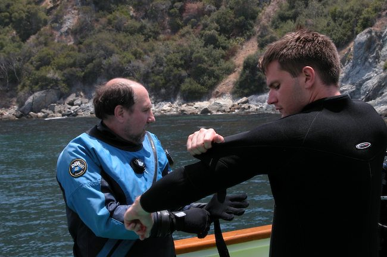

Channel Islands July 2006
Index
Previous
5 of 21
Next
Rating: 2
Badges: Keyword
Aperture: f6.1
Shutter Speed: 1/250
Exposure Bias: 0ev
Focal Length (35mm): 78mm
Focal Length: 20mm
Caption: Gregg & DJ
Keywords: Channel Islands
Name: Channel Islands 2006-07-16 032006PM
Image Date: 7/16/06 3:20:06 PM PDT
ISO Speed Rating: ISO100
File Size: 1.22 MB
Master Location: Channel Islands 2006-07-15
